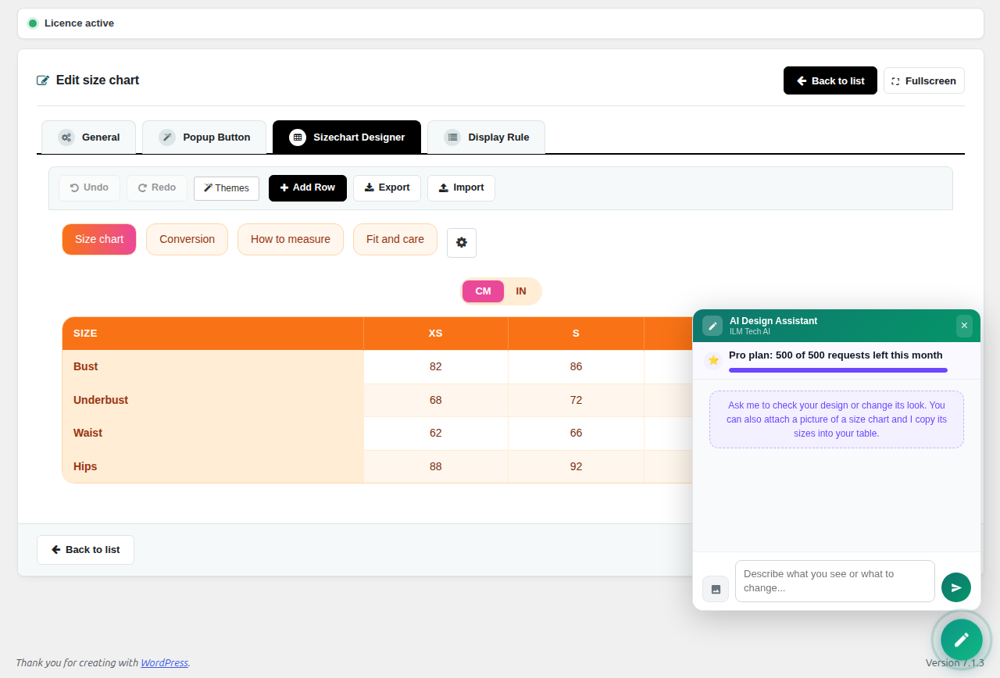
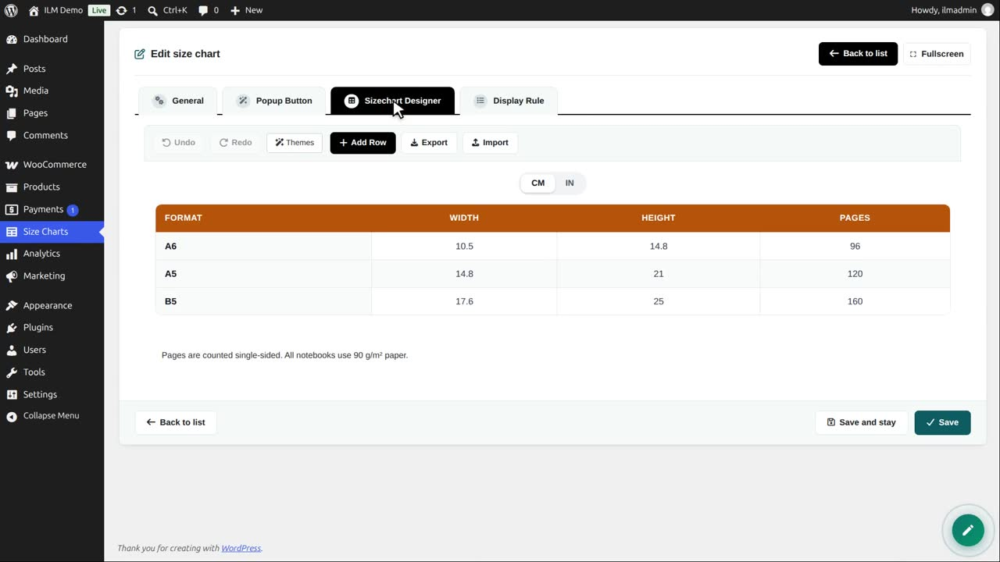
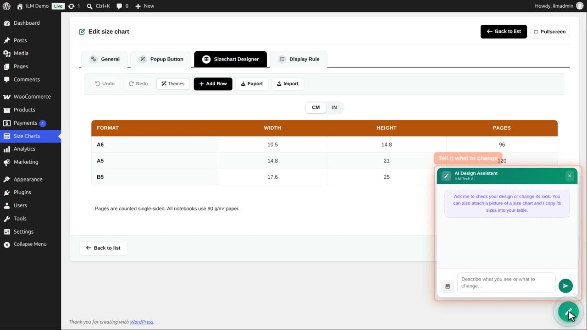
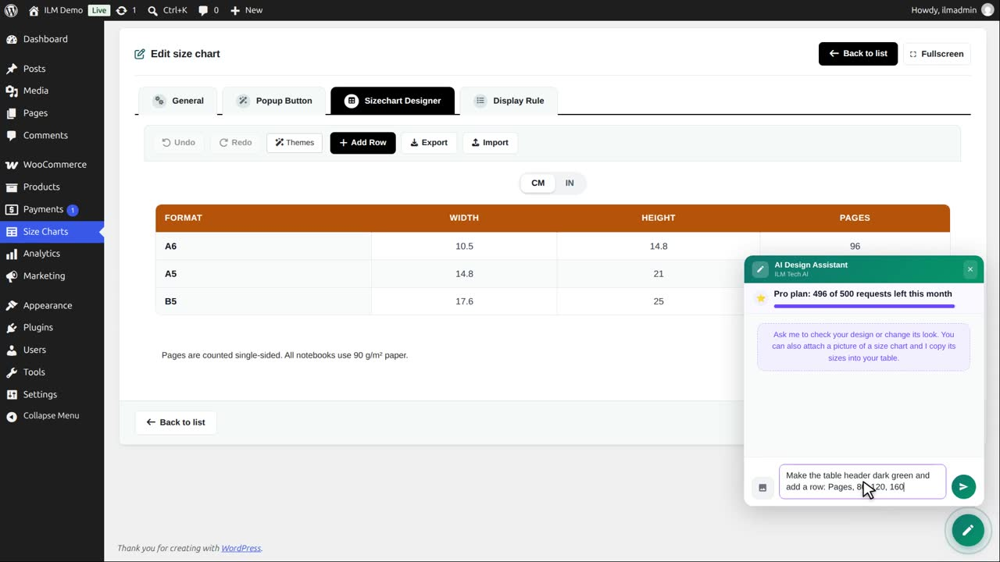
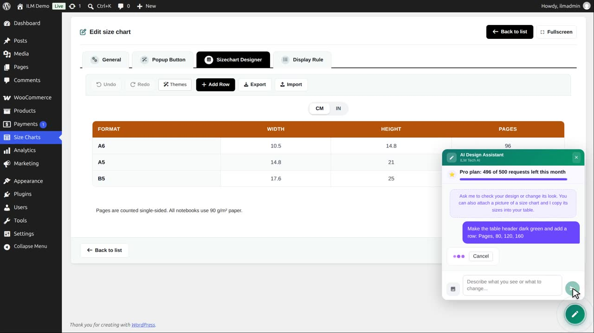

Inside the Sizechart Designer, the round AI button opens the AI Design Assistant (in the list, the AI button of a chart opens it straight away). Describe what to change (“make the header dark blue”, “add an inch unit”, “add a how-to-measure text next to the table”) or click Attach a picture to send a picture of a size chart you like: the assistant copies its sizes and look. Each answer that changes the design uses one request; an answer that changes nothing is free. Undo takes any change back.

The AI Design Assistant in the chart editor.
Pictures can be PNG, JPG, WebP or GIF. Large pictures are scaled in the browser, and at most 8 MB is sent.
Edit a chart and open the designer. The green button at the bottom right is the AI design assistant.

Click it. Type what you want to change, in your own words. You can also attach a picture of a chart to copy.

We ask: make the table header dark green, and add a row for the number of pages.

Send. The assistant answers and changes the chart in the designer: a green header and a Pages row.

Not what you wanted? Undo takes it back. Save the chart to keep the change.